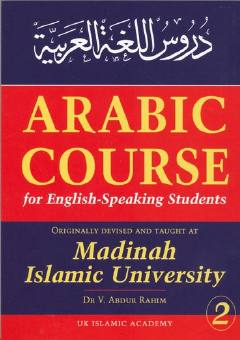

LIArab tilini o'rganuvchilar uchun mo'ljallangan tizimli va samarali darslik.
Ushbu kitob Madina Islom universiteti professori Shayx V. Abdur-Raheem tomonidan arab tilini o'rganuvchilar uchun maxsus ishlab chiqilgan ikkinchi darslikdir. Unda arab tili grammatikasi va leksikasi bosqichma-bosqich, tushunarli uslubda bayon etilgan.